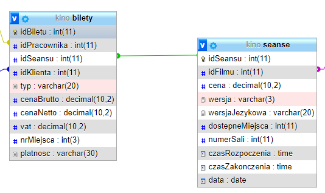
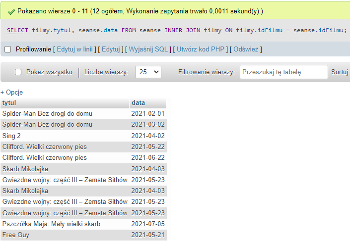

INNER JOIN
Klauzula INNER JOIN służy łączenia tabel.
Składnia:
SELECT tabela1.kolumna, tabela2.kolumna
FROM tabela1;
INNER JOIN tabela2 ON tabela1.kolumna = tabela2.kolumna;Aby połączyć poprawnie tabele należy je połączyć w sposób: tabela.klucz_glowny = tabela.klucz_obcy w zależności od połączeń w bazie danych. Aby sprawdzić połączenia tabel, należy wybrać bazę danych, która nas interesuje i wejść w Widok projektu
 